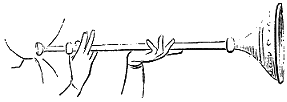
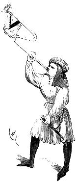
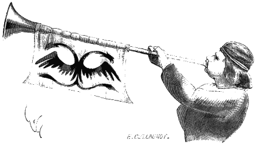
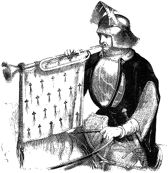

Eugène VIOLLET le DUC
Dictionnaire raisonné du mobilier.TROMPE, s. f. (trompette, araine) La trompe, l'araine, sont les instruments de musique guerrière par excellence. A l'article BUSINE, on a présenté quelques unes de ces longues trompes qui servaient à rallier les troupes, à exciter les milices au combat La trompe ou trompette est de plus petite dimension que la busine, c'est l'araine, le tube de métal terminé en pavillon. On n'emploie guère les mots trompette, clairon que vers la fin du XVe siècle : « Quand vint le lendemain au plus matin, Gérart, qui avoit ses gens tous prestz, fist sonner ses trompettes et clerons par telle force qu'il sembloit que toute la terre tremblast. 1 »
|  | Figure 1 |
 Figure 2 Dès le XIIIe siècle, la trompette droite à large pavillon est en usage dans les armées (fig. 12) Vers la fin du XIVe siècle, la trompette militaire, au lieu d'être droite, est parfois doublement coudée (fig. 23) Le tube est décoré d'un morceau d'étoffe armoyé On voit cependant des trompettes de guerre droites pendant le cours du XVe siècle (fig. 34). Vers la seconde moitié de ce siècle apparaissent les véritables clairons de guerre (fig. 45). Bien avant cette époque, vers le milieu du XIVe siècle, la trompette sert à donner des ordres aux gens de guerre à cheval. Quelques heures avant la bataille de Cassel, c'est ainsi que les dispositions de la gendarmerie sont réglées : « Enssi fut ordineit et cascon alleis à son logiche pour soppeir tempre, et desist cascon à ses compagnons que ausitoist que ons oroit la trompette, que cascon metist ses selles, et quant ons l'oroit la seconde fois, que cascon s'armast, et la tierche fois que cascon montant et s'en allast vers sa banire ; et laiassent la endroit tout harnois et charois, et prist ung pain sens plus por magnier, car ons se combateroit le lendemain a quel meschief que chu fust6. » Des trompettes étaient données aux ménétriers de trompes, qui annonçaient l'ouverture des joutes et tournois et qui accompagnaient les parlementaires, ou qui, dans certaines occasions, étaient eux-mêmes chargés de faire des ouvertures aux troupes ennemies. « Sur la journée vinrent trois menestreis de trompes qui dessent as Engles que les Escots en astoient alleis des à meenuit, et astoient ja bien dix liews loing. Si furent pris les dits menestreis et les mist-ons en prison ; puis passont gens d'armes à grant faison por veoir si che astoit voirs7 » Déjà, au XIVe siècle, on donnait le nom de trompet à ces ménétriers de trompes.
Figure 3  Pendant les guerres du XIVe siècle, les corps d'armée avaient leur musique. « Et se logea le dit conte d'Arondel et son ost sur icelle rivière si près d'icellui village que, toute nuyt, les dits François et Angloiz ouyoient parler l'un l'autre et les menestrez les ungz des autres8 »
Figure 4 
Notes :
(1) Gérard de Roussillon, en prose, édit. de Lyon, commencement du XVIe siècle.
(2) Manuscr. de l'Apocalypse, XIIIe siècle, anc. collect. B. Delessert.
(3) Manuscr. de la biblioth. de Troyes.
(4) Manuscr. des passages d'outre-mer, Biblioth. impér. (XIVe siècle).
(5) Voyez le manuscr. du Traité sur les Tournois par le roi René.
(6) Chroniques de Jehan le Bel, Biblioth. roy. de Belgique.
(7) Chron. de Jehan le Bel, Biblioth. roy. de Belgique.
(8) Jean Cartier, Chron. de Charles VII, 1432, édit. de Jannet, t. I, p. 167.